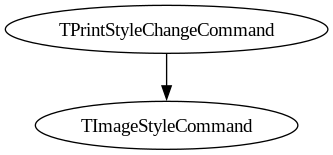

Geneologies of Inheritance in Photoshop 1.0.1
This summer, I picked up editors Bajohr and Krajewski's really excellent volume Quellcodekritik: Zur Philologie von Algorithmen (Source Code Critique: On the Philology of Algorithms), published by the August Verlag.
The volume is split up into two sections: "The Sequential Paradigm," and "The Connectionist Paradigm" (from now on all translations my own). The former deals with a more traditional source code hermeneutics (if there is such a thing), while the latter is devoted to the less-scrutable world of machine learning.
The third article in the first section, "How do you read 100,000 lines of code?" by Till A. Heilmann, is a reading of Photoshop 1.0.1. The primary question of his essay is what it says on the tin: how can you perform a good reading of the voluminous source code of a commercial program? One answer is: the reading should be distant. Close reading of such a corpus is difficult, and the returns of such a venture are likely to diminish rapidly. Heilmann gives us methods for performing such a reading on such a corpus. For example, he splits the source code up into separate lines, and finds that nearly half the lines in the section written in assembly are empty, compared to about a third of the lines in the section written in Objective Pascal. The assembly section is also significantly more commented than the Pascal section. This is something like an exercise in comparative code stylistics: less-legible assembly requires more explanatory aids to be understood (both the structuring element of empty lines and the commentary) than relatively self-documenting Pascal.
Of particular interest to me was the final section, which dealt with the inheritance relationships of objects in the code. Maybe this was because I read Galloway's The Poverty of Philosophy not long before, which also deals with inheritance and object-orientedness in relation to contemporary philosophy. In the Photoshop code, Heilmann finds 12 separate object geneologies, each tracing back to an object from MacApp, "the then-official framework which Apple provided for the development of Macintosh programs with Object Pascal" (122). As laconic as these geneologies are, they do give us some insight into the architecture of the program. One might ask, as Heilmann suggests: how many parents does each object have? What are the rudimentary commands, which Photoshop implements? What are the frames and perspectives with which Photoshop is projected on the user's screen?
And then came the kicker. Heilmann writes, leaving it as an exercise to the reader, "With a little programming skill, these lists could be displayed as a tree diagram, or in some other graphic form."
So I decided to take on the challenge, which ended up being a little more challenging than I thought it would be, as is always the case for visualization. I first downloaded the source code and, following Heilmann's example (though using Python instead of Bash), extracted all of its object definitions, saving the parents and children in a dictionary. I then iterated through this dictionary, and using the Python library NetworkX, produced a directed graph of all the geneaologies. As Heilmann points out, there are actually 12 separate geneologies, i.e. 12 disconnected subgraphs in the big graph. I separated these out, and started visualizing using matplotlib. This worked reasonably well for the smaller graphs, but the larger graphs (especially TCommand) had so much overlap that they were illegible. Eventually, I found out that you can export NetworkX graphs to the .dot format, and produce tree diagrams in this way. The resulting graphics are a little plain, but they I think they get the job done.
First, behold the full graph (with the 12 separate subgraphs) in all its untamed glory
You're probably gonna wanna open that in a new tab... Next follow the 12 subgraphs, visualized separately:


As you can see, there's a lot of variation in the size of these graphs. Some objects, like TStdPrintHandler, are the parent of only one other object, whereas others, like TCommand, produce six generations of offspring. If we wanted to go really far back, we'd have to include all the object declarations from MacApp. I suspect then we'd see all of these geneologies reunited, in a sort of Object Pascal ingathering of the exiles. We will have to wait on that.